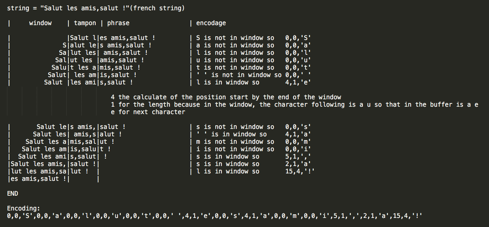

LZ77 is a algoritm of compression without loss propose by Abraham Lempel and Jacob Ziv in 1977. LZ77 use a slider window and a buffer, the pattern meet in the buffer arouses a occurences research in the window. if a occurence is found, so the pattern in the buffer is replace by the position in the window, the lenght of occurence and the next chararcter. if any occurence is found, so the present pattern is replaced by 0, 0 and the present character. example: [position][lenght][next character] or [position][lenght][present character]  Usage: python3 compress.py input output python3 decompress.py input output The file Setting.py containt the settings for the numbers of bits for, position, lenght, character and start address. For information: open information.html or python3 Interface/graphic.py Graphic interface Source code: https://github.com/fbonhomm/Simple-LZ77 For of informations or implementation ideas: mail: flo-github@outlook.fr